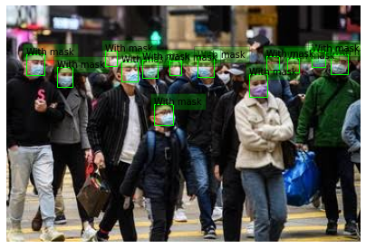
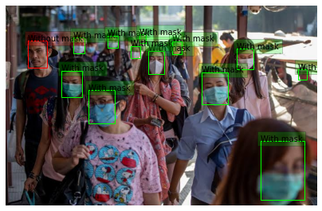
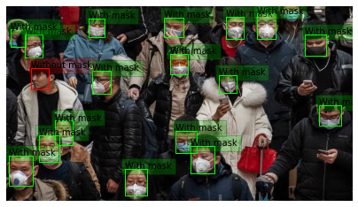
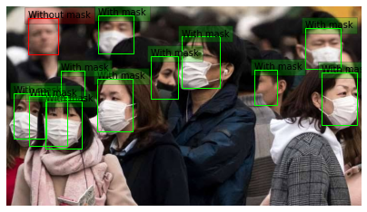
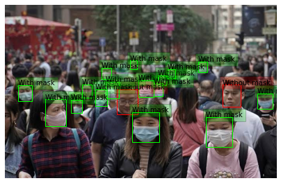
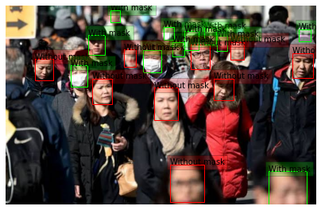

Facial Recognition using
Deep Learning
Introduction
In today’s world, face recognition has become an integral part of our lives. We use face recognition feature for multi-purposes in our latest gadgets such as FaceID, etc. In this project, we will implement face recognition technique using deep learning concepts. Our aim is to recognize people from the given dataset such as photos or videos. The name of that person will be displayed on the photo or video being displayed. We will accomplish this through four important phases: face detection, posing and projecting faces, encoding (recognizing) faces through basic facial measurements and finding person’s name from encoding. We will use deep convolutional neural networks for encoding faces and also linear support vector machine (SVM) classifier for getting the information about the name of the person and displaying it. We also want to map a person’s face, even when the whole face (50%) is not displayed in the dataset. Thereby, predicting a face and identifying it. In this way, we can identify a person when he/she has worn a face mask, especially in current times of COVID-19 pandemic. We can use this feature in many gadgets and applications for authentication and medical purposes.
Problem Description
Face recognition involves many complex tasks that needs to be divided into stages. We are not just going to recognize faces from a given photo or a live video stream, we will also predict a person's face , when only half of it is given to the system as the data. And then, we will match the predicted face with our database, in order to recognize the face and identify it. Thus, there are four main stages by which we can achieve face recognition using deep learning. Face detection is the first basic stage wherein, we generate histogram of oriented gradients (HOG) representation of the image and then, we find the part of this image that matches or is similar to the HOG pattern extracted from a number of other training faces. In the next stage, i.e., posing and projecting faces – we need to detect faces from images having different poses of the same person. Hence, in this, we will use face landmark estimation algorithm. In this, we will train machine learning algorithm to find 68 specific points on any face, to solve this issue. The third stage, which is the most critical stage, is encoding faces. In this, we will use a number of measurements unique to a person’s face, which will help us identify a face. We use deep convolutional neural network (CNN) for this. Thus, we will be able to identify a person’s face. We will also do all these above tasks manually first, and then will train the machine later. We will also map the facial points of half of the face to the predicted facial points of the other half of the face. After the mapping is successfully done, we then use it to identify the person in the third stage. The last stage is the easiest stage, in which we need to find the name of the person/face that we identified from the database and display it. We use linear SVM model classifier for this. We need to run this classifier on our photo or video, to get the output, i.e, the name of the face of the person identified in the video or image. These combined tasks, enable us to recognize faces of people with high precision.
Outputs
Facial Detected Images who wear mask






Visit project site for detail information by clicking the icon below